總覽與使用方式
- 這頁收了什麼
- 考古資料夾裡能讀到的所有期中題目，依老師分四區。每題照原卷寫法（單選、圈選、是非、Yes/No、問答、看圖題與配分），答案收在「顯示答案」裡：先標學長姐作答（考卷上的筆跡或融合檔整理），再寫整理者依講義寫的逐選項詳解與講義頁碼。
- 學長姐心得（回憶，非官方）
- 2022：「萬的跟考古一模一樣」；「王麗倩的跟有照片那個考古一樣，除了第四題（改問 What medical causes 影響 animal behaviors?）」。
- 〈Mid 108 影診萬萬〉（108 學年）：王麗倩「行為學（講義）的 10～23 頁可能會考」「要能分辨 X 光下每個臟器的區別」「給一張 X 光，給出診斷和解釋」；張雅珮另附「96 年據說考這兩張圖」；「李繼忠（今年沒有）」。
- B09（2023）：「王尚麟的真的要讀書！！」「王麗倩基本上考古」「張雅珮 B09 不考 CT、MR，也是全考古」「老萬的我背了答案順序直接填上去」。
- 讀書優先順序（推測）
- 要小心
- 學長姐的作答不一定對：本頁發現至少 4 處和講義衝突（王尚麟 2022 第 1、2 題；2022 張雅珮第 3a、4h 題；108-1 第 7-3 題），每題都標了「⚠」並寫出講義依據，彙整在第 9 節。
考卷 × 老師對照必考
| 考卷 | 老師 | 題目 | 答案來源 | 本頁位置 |
|---|---|---|---|---|
| 2022（111-1）期中 | 王尚麟 | 單選 10 題 | 學長姐參考答案（藍筆） | 第 2 節 |
| 2022（111-1）期中 | 張雅珮（80%） | 圈選 2、Yes/No 5、是非 10、看圖 Q5–8 | 考卷勾選＋學長姐註解 | 第 3 節、第 4 節 |
| 2022 期中 | 王麗倩 | 同照片考卷，第 4 題改問行為的醫學原因 | 融合檔學長姐整理 | 第 5 節 |
| 2022 期中 | 萬灼華 | 同考古 10 題 | 學長姐作答 | 第 6 節 |
| 100-1 期末（principles of radiology / neural system） | 張雅珮（推測） | 單選 3、問答 1 | 考卷筆跡 | 第 3 節 |
| 107-1、108-1（90%）、109-1（90%）期中 | 張雅珮 | 圈選、單選、看圖 | 考卷筆跡（108-1 看圖題有手寫作答） | 第 3 節、第 4 節 |
| 年份不明（融合檔 p.13–16） | 張雅珮（推測） | 看圖 Question 3、4 | 融合檔所附英文答案（來源不明） | 第 4 節 |
| 照片考卷（年份不明） | 王麗倩 | 問答 4 題 | 學長姐整理 | 第 5 節 |
| 2018 Mid Session（HPH） | 黃慧璧（萬萬檔 p.39 標明「黃慧璧 臨床診斷」） | 量表題 1 題 | 學長姐整理 | 第 7 節 |
| 〈Mid 108 影診萬萬〉108 學年彙整 | 萬灼華、張雅珮、王麗倩、向才園、黃慧璧、跛行檢查（老師不明） | 答案、筆記、舊年度題目；附註「李繼忠（今年沒有）」 | 學長姐整理 | 分散在各節＋第 7 節 |
考卷照片已遮蓋姓名、學號與病歷資訊。標「學長姐作答」的是考古原檔上的答案；「詳解」是整理者依講義寫的，都不是官方答案。考試範圍以老師上課為準。講義頁碼可點開右側 PDF 對照。
王尚麟：超音波（2022）
2022 唯一一份，10 題單選，範圍是超音波診斷入門。兩份學長姐作答影本答案完全相同（B、A、A、D、C、A、B、D、A、A），其中第 1、2 題與講義原理衝突，已標 ⚠。第二份影本多了手寫筆記（CTS／PCS／DH、流速、dog／cat、肝脾回音比較），已併入各題詳解。
原卷照片（點開）
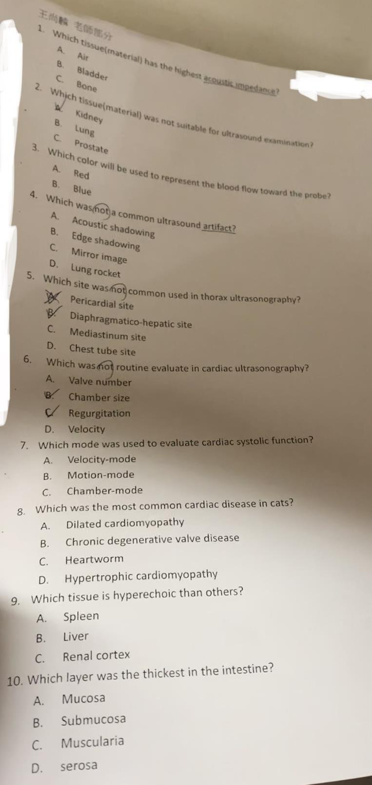
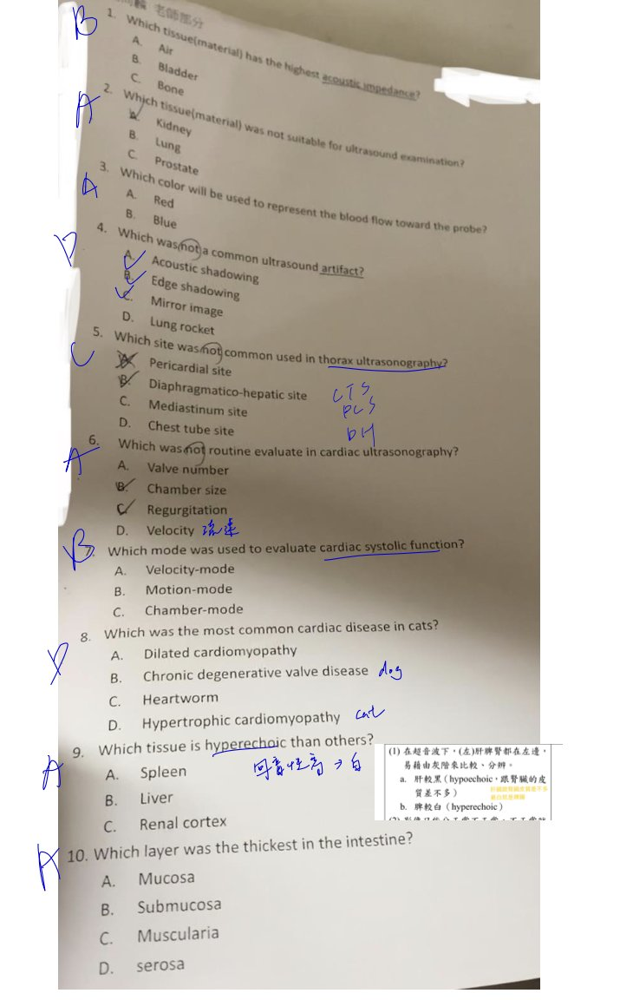
聲阻抗＝組織密度 × 聲速，三者中骨頭密度與聲速都最高，聲阻抗最大。(A) 空氣密度極低，聲阻抗最低；它會造成強反射，是因為和軟組織的阻抗差距大，不是因為它本身阻抗高。(B) 膀胱內是尿液，接近水，阻抗中等，所以超音波下是無迴音（anechoic）。(C) 對。講義寫回音產生在「不同聲阻抗的界面」（〈超音波診斷入門〉p.1），並把骨頭、結石列為造成乾淨聲影的高反射構造（〈超音波診斷入門〉p.2）；聲阻抗公式為補充。學長姐選 (B)：兩份影本都寫 B，不是筆誤，但與阻抗的物理定義不符，答題以 (C) 為準。
(A) 腎臟是腹部超音波的常規器官，講義有腎臟與肝、脾回音比較（〈超音波診斷入門〉p.9）。(B) 對：正常肺充滿空氣，超音波幾乎全被反射，只看得到肋膜線與 A-line 這類偽像（〈超音波診斷入門〉p.4 Normal dry lung），看不到肺實質；只有肺變濕或實質化時才看得到（B-line、肺葉扭轉）。(C) 前列腺可經腹部掃查（補充）。兩份影本都寫 A，與講義不符，答題以 (B) 為準。
(A) 對：物理上，紅血球朝向探頭移動時回音頻率升高（都卜勒效應，和天文的藍移同一原理）；但顯示用的顏色是慣例，不是頻率對應的光色：朝向探頭＝紅、遠離探頭＝藍（〈超音波診斷入門〉p.2：RBC moves toward this pulse… (RED)）。(B) 錯：藍色代表遠離探頭、頻率降低。補充：英文口訣 BART（Blue Away, Red Toward）；儀器可以反轉顏色，臨床要看色階條；紅藍只代表方向，不代表動脈或靜脈。
另一份影本把 A、B、C 三個選項各打了勾，D 沒打，代表 A、B、C 是偽像、D 不是。(A)(B)(C) 都在講義的偽像清單（〈超音波診斷入門〉p.2–〈超音波診斷入門〉p.3：acoustic shadowing、edge shadowing、enhancement、reverberation、mirror image）。(D) 對：lung rocket（B-line）是胸腔 POCUS 判斷濕肺的徵象，講義放在胸腔章節（〈超音波診斷入門〉p.4），不在「常見偽像」清單裡。補充：B-line 本質上也是一種迴響類偽像，這題考的是講義分類。
另一份影本在題旁手寫 CTS、PCS、DH，就是這三個標準位置。講義的胸腔掃查三個位置：CTS（chest tube site）、PCS（pericardial site）、DH（diaphragmatico-hepatic）（〈超音波診斷入門〉p.3）。(A)(B)(D) 都是。(C) 對：縱膈腔在講義是「要評估的構造」（分辨脂肪、液體或腫塊，〈超音波診斷入門〉p.5），不是標準掃查位置。
另一份影本在 Velocity 旁註「流速」（都卜勒量的就是血流速度）。講義列的評估項目：chamber、muscle、valve、stenosis、systolic/diastolic function、velocity、regurgitation（〈超音波診斷入門〉p.5）。(B)(C)(D) 都在清單。(A) 對：評估的是瓣膜（valve）的構造與功能，不是「數瓣膜有幾個」。
(B) 對：M-mode 記錄心臟短軸徑隨時間的變化（〈超音波診斷入門〉p.6），可量收縮期與舒張期的心室內徑，算出收縮分率（補充）。(A)(C) 錯：沒有這兩種模式；流速是用都卜勒量。
(A) 擴張型心肌病（DCM）好發大型犬。(B) 慢性退化性瓣膜病（CDVD）是犬最常見的後天心臟病（兩份影本都在旁註 dog）。(C) 心絲蟲不是貓最常見的心臟病。(D) 對：肥厚型心肌病（HCM）是貓最常見（兩份影本都在旁註 cat）（〈超音波診斷入門〉p.7）。
講義（〈超音波診斷入門〉p.9）：肝臟相對低迴音、質地較粗；肝臟與右腎皮質約等迴音。所以三者中脾臟最亮（A 對），(B)(C) 錯。常見順序：脾 > 肝 ≥ 腎皮質（順序為補充）。另一份影本在題旁寫「回音性高 → 白」，並貼了學長姐的筆記：肝較黑（hypoechoic，與腎皮質差不多）、脾較白（hyperechoic）；這就是「hyperechoic＝亮」與「最亮的是脾」的記法。
(A) 對：正常小腸腸壁五層中黏膜層最厚，超音波下是寬的低迴音層（講義只有五層構造圖，〈超音波診斷入門〉p.10；最厚為補充）。(B) 黏膜下層是細的高迴音線。(C) 肌肉層是細的低迴音層；肌肉層增厚是異常（講義列 intestinal wall muscular thickening）。(D) 漿膜層是最外側的細高迴音線。
張雅珮：X 光原理與攝影（100-1、107-1、108-1、109-1、2022）
每年同一組題目換字：光電效應圈選 → 影響對比度的因素 → mA／kVp 敘述哪個錯 → 光子穿透數 → 擺位。範圍是X 光學基礎與脊椎影像判讀。
原子序或密度越高 → 光電效應越高（吸收越多）→ 穿過去打到底片的 X 光越少 → radiopacity 越高 → 影像越白。kVp 越高 → X 光能量越高 → 光電效應越低 → 穿過的越多 → radiopacity 越低 → 組織間對比度下降（〈X光學基礎〉p.6）。順序：空氣 < 脂肪 < 水／軟組織 < 骨 < 金屬（〈X光學基礎〉p.13 的密度與原子序表）。
2022（111-1）張雅珮部分 80%必考
原卷照片（點開）
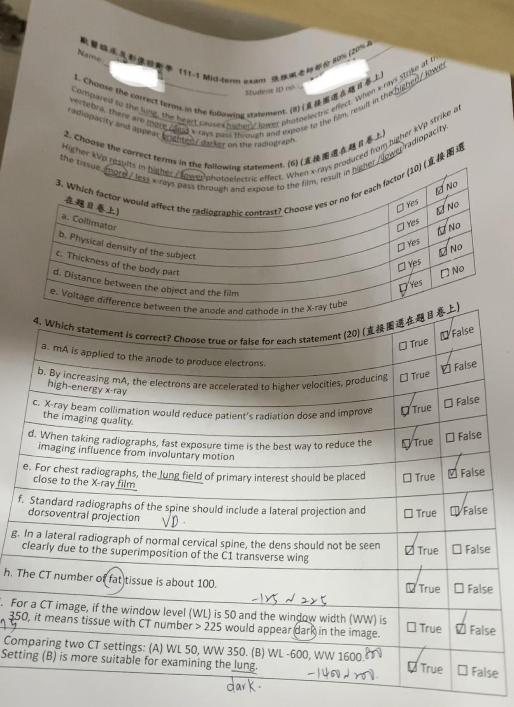
心臟（軟組織）比肺（空氣多）密度高 → 光電效應較高；脊椎是骨頭，吸收多 → 穿過少 → radiopacity 高 → 白（〈X光學基礎〉p.6、〈X光學基礎〉p.13）。
講義（〈X光學基礎〉p.11 Factors affecting contrast）：radiographic contrast 取決於底片對比、霧化與散射（fog and scatter）、主體對比；主體對比受密度、原子序、厚度、X 光能量（kVp）影響。
(a) ⚠ 準直器限制照野、減少散射與霧化（〈X光學基礎〉p.9：non-useful radiation degrades image quality because of fogging），依講義會影響對比，傾向 Yes；學長姐在旁註「準直儀→接觸大小 ✗」判為 No，原作答者也勾 No。兩種說法都列出，以老師上課為準。補充：107-1、108-1 的訂正答案（不影響對比的只有 filter）也隱含準直器是影響對比的。
(b) Yes：密度差異。(c) Yes：厚度差異。(d) No：物體與底片距離影響的是放大與變形（〈X光學基礎〉p.17），不是對比（學長姐也打 ✗）。(e) Yes：陰陽極電壓差就是 kVp（〈X光學基礎〉p.4）。原作答者只勾 e 為 Yes，與講義不符。
(a) mA is applied to the anode to produce electrons.
(b) By increasing mA, the electrons are accelerated to higher velocities, producing high-energy x-ray.
(c) X-ray beam collimation would reduce patient's radiation dose and improve the imaging quality.
(d) When taking radiographs, fast exposure time is the best way to reduce the imaging influence from involuntary motion.
(e) For chest radiographs, the lung field of primary interest should be placed close to the X-ray film.
(f) Standard radiographs of the spine should include a lateral projection and dorsoventral projection.
(g) In a lateral radiograph of normal cervical spine, the dens should not be seen clearly due to the superimposition of the C1 transverse wing.
(h) The CT number of fat tissue is about 100.
(i) For a CT image, if the window level (WL) is 50 and the window width (WW) is 350, it means tissue with CT number > 225 would appear dark in the image.
(j) Comparing two CT settings: (A) WL 50, WW 350. (B) WL −600, WW 1600. Setting (B) is more suitable for examining the lung.
(a) F：mA 是通過陰極燈絲的電流，決定電子數量（〈X光學基礎〉p.4）。
(b) F：加速電子、產生高能 X 光的是 kVp，不是 mA（〈X光學基礎〉p.4）。
(c) T：準直減少病患劑量、減少霧化（〈X光學基礎〉p.9）。
(d) T：講義選 kVp、mAs 時要考慮 motion（〈X光學基礎〉p.10），縮短曝光時間可減少不自主動作的影響。
(e) F：一般原則是感興趣區靠近底片以避免放大，但肺部病灶是例外——靠下側的肺會塌陷（atelectasis）把病灶邊界消掉，所以要看的那一側肺放遠離底片（〈X光學基礎〉p.17；學長姐註「如果想看右邊要把右邊放在上面」）。
(f) F：脊椎標準投照是 lateral 與 VD（ventrodorsal），不是 DV（〈脊椎影像判讀〉p.17、〈脊椎影像判讀〉p.24）。
(g) T：學長姐作答 True（旁註「應該？」）；側位片上 C1 寰椎翼與齒突重疊，所以齒突看不清楚（講義未直接寫，依解剖推測）。
(h) F：⚠ 脂肪的 CT 值約 −100 HU（〈CT與MRI原理〉p.13 的 Hounsfield unit 表：fat −100）；原作答者勾 True 是錯的。
(i) F：WL 50、WW 350 → 顯示範圍 50 ± 175＝−125 到 225；> 225 的組織顯示為白色，< −125 才是黑（學長姐註 −125～225）。
(j) T：(B) 範圍 −600 ± 800＝−1400 到 200，涵蓋空氣與肺組織，是肺窗。
h–j 學長姐標「不考」：2023 學長姐心得說張雅珮不考 CT、MR（B09），但 2022 有考，準備時至少要會算窗寬窗位。
109-1 張雅珮部分 90%必考
原卷照片（點開）
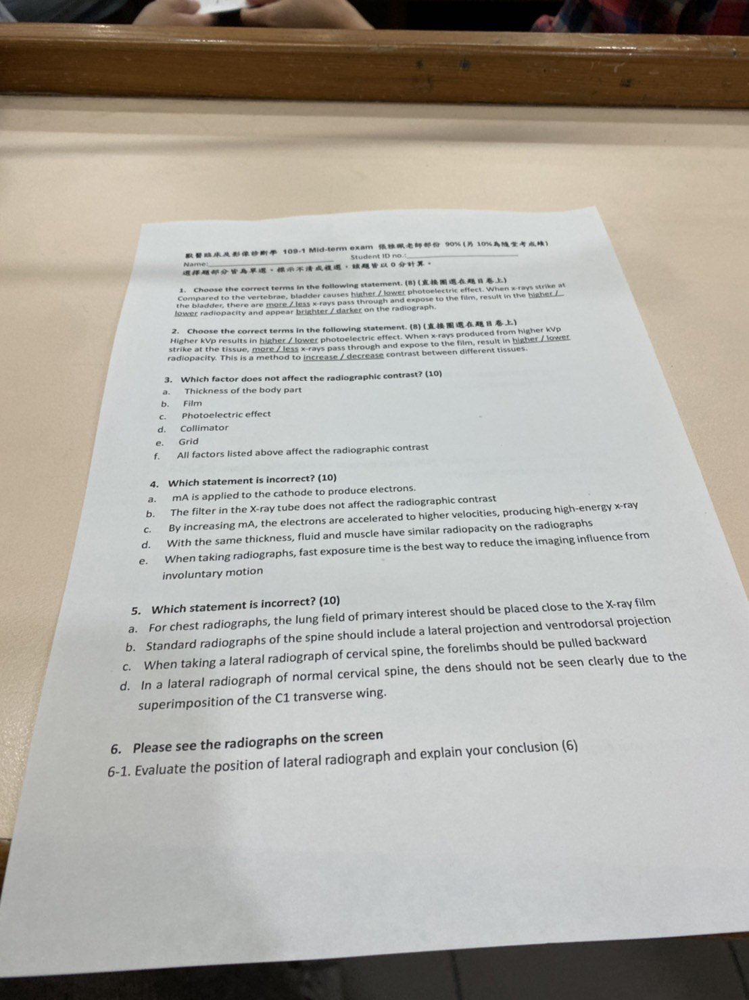
膀胱（尿液，水的密度）比脊椎（骨）光電效應低 → 穿過多 → radiopacity 低 → 比骨頭暗。注意比較對象換了方向：和 107-1 的「比脂肪」答案相反（見第 8 節）。
(a) 厚度＝主體對比。(b) 底片＝film contrast。(c) 光電效應是成像的主要機制，直接決定組織間差異（〈X光學基礎〉p.6）。(d) 準直器減少散射與霧化。(e) 濾線柵（grid）吸收散射線（補充）。fog and scatter 是講義列的對比因素，所以 (a)–(e) 都影響，答 (f)。
⚠ 這題的選項沒有 filter，所以答案是「全部都影響」。同一份考卷第 4 題 (b) 把「filter 不影響對比」當成正確敘述；107-1、108-1 同題的訂正答案則是 filter（見下方 108-1 第 3 題）。三份合起來：只有 filter 不影響對比，其餘（含準直器、濾線柵）都影響。
(a) 對：mA 加在陰極產生電子（〈X光學基礎〉p.4）。(b) 對：老師把濾片設定為不影響對比——107-1、108-1「哪個不影響對比」的學長姐訂正答案都是 filter（見上方 108-1 第 3 題）。(c) 錯：加速電子的是 kVp（〈X光學基礎〉p.4）——這是本題答案。(d) 對：液體與肌肉同屬「軟組織 radiopacity」（〈X光學基礎〉p.13）。(e) 對（同 2022 第 4d 題）。
(a) 錯：肺部病灶的例外，要看的肺放遠離底片（〈X光學基礎〉p.17）——本題答案。(b) 對：lateral＋VD（〈脊椎影像判讀〉p.17）。(c) 對：頸椎側位前肢往尾側拉（〈脊椎影像判讀〉p.18）。(d) 對（同 2022 第 4g 題）。
考場投影片沒有留下（融合檔 p.12 的「Question 6」投影照片年份未標，見第 4 節）。答題方向：先判斷是左側位還是右側位，依據是 marker、心臟形狀、橫膈腳與後腔靜脈的關係、兩側肋骨與肢體是否重疊（擺位是否標準），再寫結論（〈X光學基礎〉p.35、〈脊椎影像判讀〉p.18）。
108-1 張雅珮部分 90%必考
原卷照片（點開）
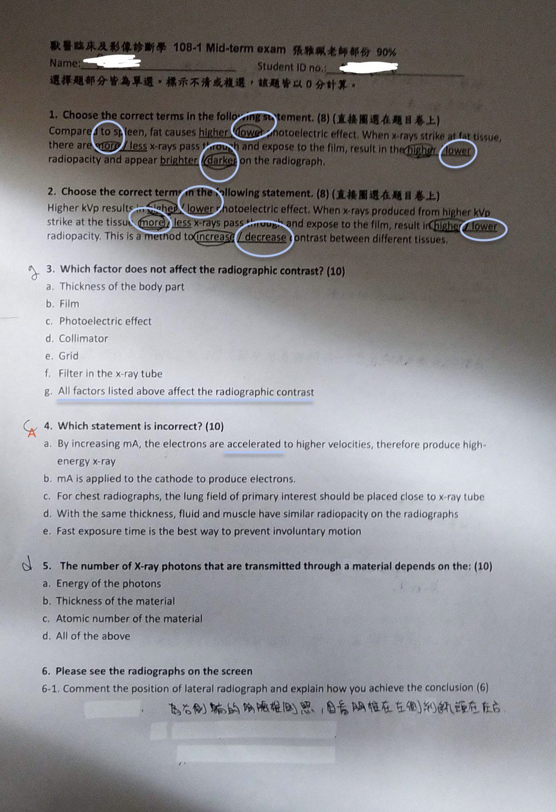
同 109-1 第 2 題。
三份資料互相印證：萬萬檔 p.26 的同一張考卷影本，藍筆在 (f) 旁寫「f ?」；萬萬檔 p.13 的 107-1 同題紅筆訂正為 (a) Filter；109-1 第 4 題把「The filter in the X-ray tube does not affect the radiographic contrast」當成正確敘述。所以老師的設定是濾片不影響對比。(a) 厚度、(b) 底片、(c) 光電效應、(d) 準直器（減少散射霧化）、(e) 濾線柵（吸收散射線，學長姐註「鉛做的柵欄」）都會影響對比。濾片的功用是先濾掉低能量 X 光（學長姐註「濾掉低的能量」），主要是降低病患皮膚劑量（補充）。講義沒有寫 filter，以老師上課為準。
(a) 錯：加速電子靠 kVp——本題答案。(b) 對。(c) 對：要看的肺放靠近X 光管（＝遠離底片），這正是肺部病灶的例外（〈X光學基礎〉p.17）；109-1 把同一句改成「close to the X-ray film」變成錯的敘述，要看清楚是 tube 還是 film。(d) 對。(e) 對。
(a) 能量越高穿透越多（光電效應 ∝ 1/E³）；(b) 越厚吸收越多（〈X光學基礎〉p.14）；(c) 原子序越高吸收越多（∝ Z³）（〈X光學基礎〉p.6）。三者都對，答 (d)。
107-1 張雅珮部分理解
原卷照片（點開）
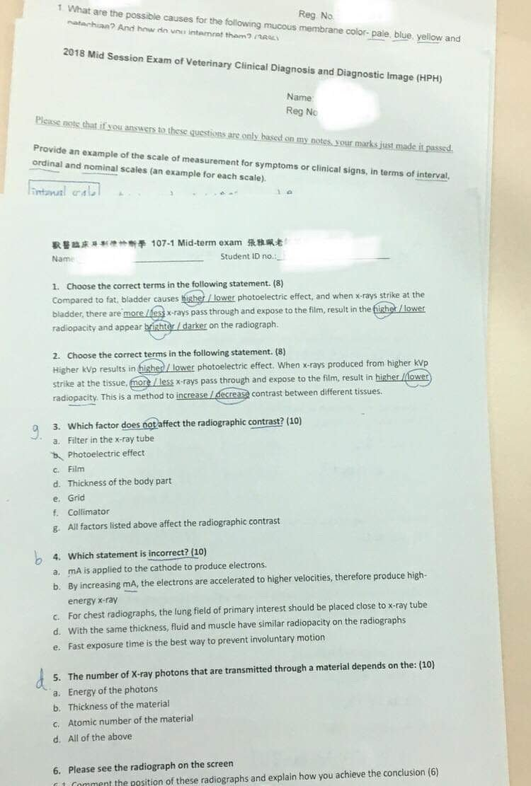
| 題 | 題目 | 答案與理由 |
|---|---|---|
| 1 圈選 | Compared to fat, bladder causes higher / lower photoelectric effect… more / less x-rays pass… higher / lower radiopacity… brighter / darker | higher、less、higher、brighter（考卷圈選相同）：尿液（水）比脂肪密度與原子序高 |
| 2 圈選 | Higher kVp…（同 108-1 第 2 題） | lower、more、lower、decrease |
| 3 單選 | Which factor does not affect contrast? (a) filter (b) photoelectric effect (c) film (d) thickness (e) grid (f) collimator (g) all affect | 鉛筆作答 (g)；紅筆訂正 (a) Filter（萬萬檔 p.13；紅筆旁註：影響對比的是 tissue 性質、X 光能量、film、fog、scatter） |
| 4 單選 | Which is incorrect? (a) mA applied to cathode (b) increasing mA accelerates electrons (c) chest: lung field of interest close to x-ray tube (d) fluid ≈ muscle (e) fast exposure | 考卷作答 (b)：加速電子的是 kVp |
| 5 單選 | Number of photons transmitted depends on (a) energy (b) thickness (c) atomic number (d) all | 考卷作答 (d) |
| 6 看圖 | 6-1 Comment the position of these radiographs and explain how you achieve the conclusion（6） | 考場影像未收錄；答法同 109-1 第 6-1 題 |
100-1 期末（principles of radiology / neural system）理解
原卷照片（點開）
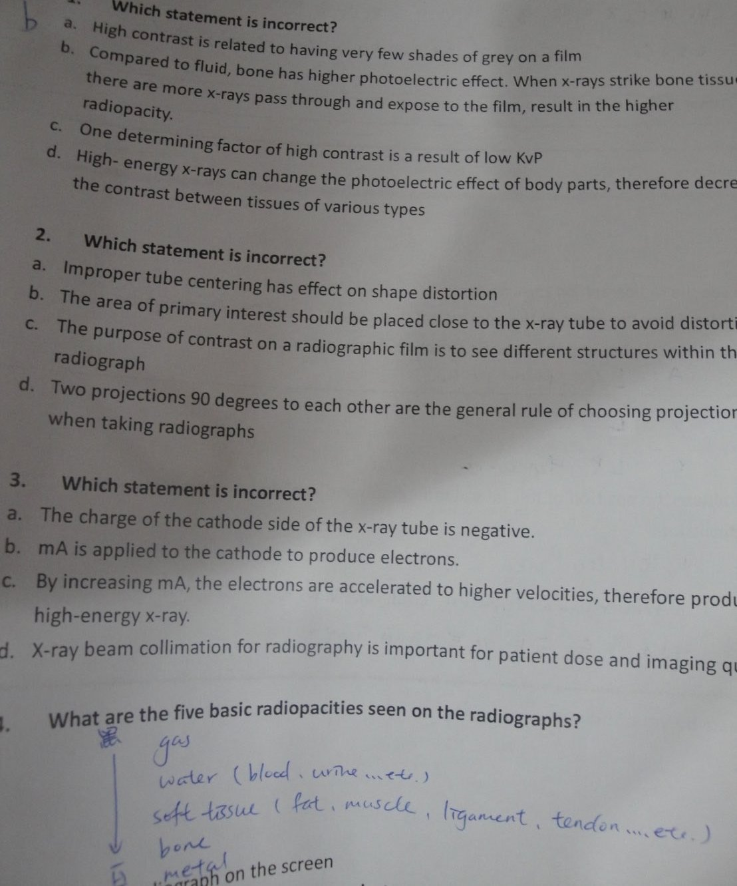
(a) 對：高對比＝灰階層次少（黑白分明）。(b) 錯：骨頭光電效應高 → 穿過的 X 光少，不是多——本題答案。(c) 對：低 kVp → 光電效應差異大 → 高對比。(d) 對：高能 X 光降低光電效應 → 對比下降（〈X光學基礎〉p.6）。
(a) 對：中心偏移造成同一物體各部位放大程度不同＝變形（〈X光學基礎〉p.17）。(b) 錯：感興趣區要放靠近底片（cassette）避免放大（〈X光學基礎〉p.17）——本題答案；肺部病灶才是例外。(c) 對。(d) 對：至少兩個互相垂直的投照（orthogonal views）。
講義 〈X光學基礎〉p.13 的表依密度與原子序排列空氣、脂肪、水、肌肉、骨、鉛，並說明液體（血、尿、膽汁、腦脊髓液）與組織（軟骨、肌肉、筋膜、肌腱、韌帶、器官）同屬「軟組織 radiopacity」。⚠ 考卷上的作答把脂肪併進軟組織、另列 water，少了「脂肪」一類，不要照抄。
融合檔 p.6 學長姐整理列為張雅珮問答第 2 題；考卷筆跡寫「LV-RD」，萬萬檔 p.40 註「照 spine＝LV-RD」，推測是 lateral＋VD 的縮寫寫法。學長姐另一版答案寫「VD（仰躺，脊椎清楚）＋oblique（斜躺，減少重疊）」（萬萬檔 p.20），但講義的標準是 lateral 與 VD，oblique、屈曲伸展、牽引是依需要另外加的投照（〈脊椎影像判讀〉p.17）。答題時可補一句：側位要讓脊椎與檯面平行，頸椎前肢往後拉、胸腰椎前肢往前後肢往後（〈脊椎影像判讀〉p.18）。
張雅珮：看圖題（神經影像與脊椎）
每年換片，考法固定：寫出異常 → 定位到節數 → 診斷。描述用 A SPINE 與六個維度（脊椎影像判讀第 4 節）。
2022 第 5–8 題必考
學長姐留下的是「考場圖的類似圖」（第 5 題寫「給類似」，第 8 題寫「好像是這張」），不是原圖；第 6 與第 8 題可能是同一系列頸椎片。學長姐的手寫答案見下方原卷照片。
學長姐作答原卷（點開）
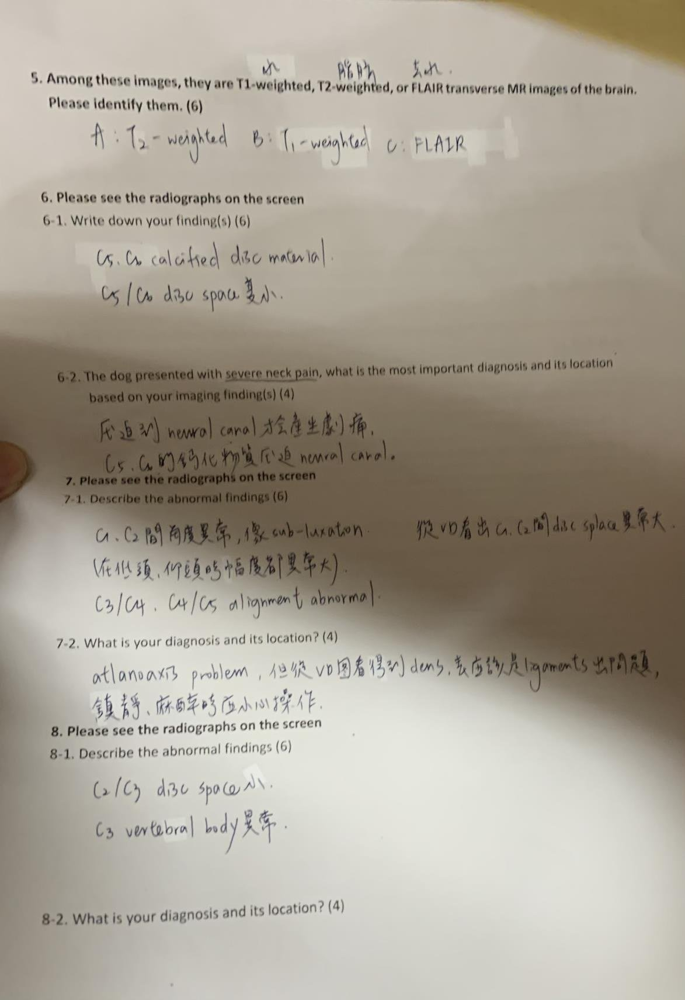
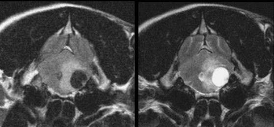
判斷順序：先看腦脊髓液（腦室）——T1W 黑、T2W 白、FLAIR 黑（自由水被抑制）；再看脂肪——T1W、T2W 都偏亮。T2W 與 FLAIR 灰白質對比相近，但 FLAIR 腦室是黑的；T1W 灰白質對比明顯、腦室黑（〈CT與MRI原理〉p.35、〈CT與MRI原理〉p.37 的 T1W／T2W／FLAIR 比較，詳見CT 與 MRI 原理）。學長姐答案旁註「水、脂肪、去水」就是這三個判斷點。
6-2. The dog presented with severe neck pain, what is the most important diagnosis and its location based on your imaging finding(s)?
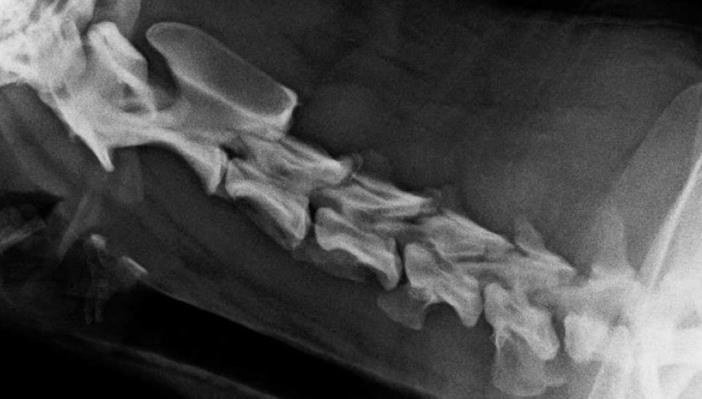
對應講義：椎間盤空間變窄＋椎間孔變窄＋椎間盤物質鈣化是退化性椎間盤疾病（Intervertebral Disc Disease, IVDD）的 X 光表現（〈脊椎影像判讀〉p.91）。寫法：「C5/C6 椎間盤空間變窄，椎間盤空間／椎間孔內可見鈣化物質 → 主要診斷 C5/C6 椎間盤突出（Hansen type I 推測）壓迫脊髓／神經根，符合頸部劇痛」；並寫「X 光無法確認壓迫程度，建議 CT 或 MRI」（〈脊椎影像判讀〉p.92）。
7-2. What is your diagnosis and its location?
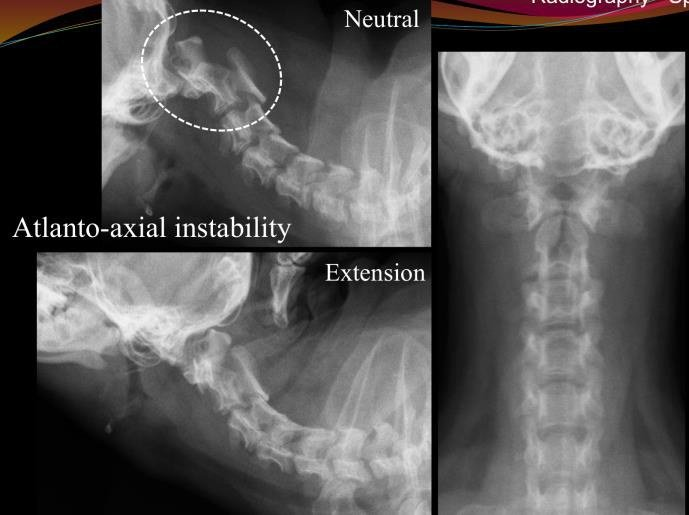
對應講義：脊椎排列異常的鑑別診斷含寰樞椎不穩定（atlanto-axial instability）（〈脊椎影像判讀〉p.35）；用中立／屈曲／伸展位比較寰樞椎間角度（〈脊椎影像判讀〉p.41、〈脊椎影像判讀〉p.68–〈脊椎影像判讀〉p.70）。標準寫法：「C1–C2 排列異常，伸展（或屈曲）時寰椎背弓與樞椎棘突間距異常增大 → 寰樞椎不穩定／半脫位；建議 CT 確認齒突（dens）是否發育不全」。學長姐提到「看得到 dens → 推測韌帶問題」是合理推論（齒突存在時，不穩定較可能來自韌帶），講義未寫，標推測。動態攝影與麻醉要小心過度屈曲（見脊椎影像判讀）。
8-2. What is your diagnosis and its location?
影像沒有留下（學長姐寫「好像是」第 6 題那張）。依作答描述，鑑別診斷方向（推測）：C2/C3 椎間盤空間變窄＋C3 椎體形狀或密度異常 → 依六維度表考慮椎間盤感染（discospondylitis，終板溶解）、骨折、腫瘤或椎間盤突出（〈脊椎影像判讀〉p.42、〈脊椎影像判讀〉p.54、〈脊椎影像判讀〉p.74）。判斷關鍵是終板有沒有溶解、是單一椎體還是跨椎間盤。
108-1 第 6–8 題（手寫作答）必考
作答原卷（點開）
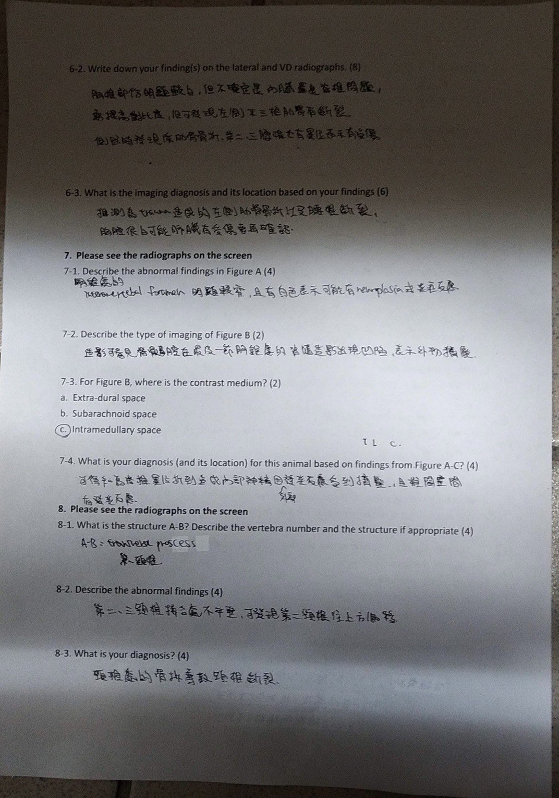
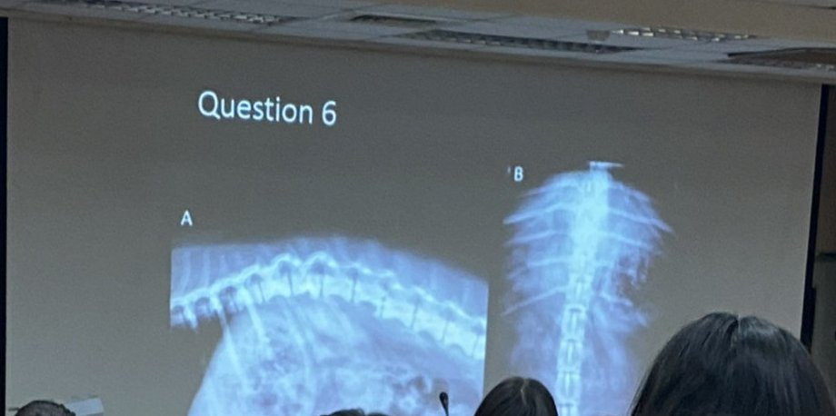
6-2. Write down your finding(s) on the lateral and VD radiographs.
6-3. What is the imaging diagnosis and its location based on your findings?
寫法建議：6-2 依 A SPINE 分項，每個異常寫「位置（第幾節、左右）＋變化（骨皮質中斷、排列中斷、椎體縮短）」；6-3 分主要診斷（與神經症狀相符的脊椎骨折／脫位）與合併外傷（肋骨骨折、肺挫傷），並建議胸腔片與 CT。這題和下方 Question 3、脊椎影像判讀的創傷 CT 案例是同一類題型。
7-2. Describe the type of imaging of Figure B.
7-3. For Figure B, where is the contrast medium? (a) Extra-dural space (b) Subarachnoid space (c) Intramedullary space
7-4. What is your diagnosis (and its location) for this animal based on findings from Figure A–C?
作答（手寫辨識）：7-1 椎間孔明顯較窄且有白色，可能有 neoplasia 或反應；7-2 造影，可看到脊髓腔在最後一節胸椎處的造影劑出現凹陷，表示外物擠壓；7-4 可能和高齡椎間盤突出、內部神經被壓迫有關。
7-2：這是脊髓造影（myelography）。7-3：脊髓造影的顯影劑注入蜘蛛膜下腔（subarachnoid space），所以 (b)。(a) 硬膜外腔不是注射位置；(c) 髓內（intramedullary）是脊髓實質本身，顯影劑不會在那裡——作答選 (c) 是錯的。講義的三種壓迫分類：硬膜外壓迫（extradural，退化性 IVDD 典型，〈脊椎影像判讀〉p.92）、ANNPE 的「髓內病灶」（〈脊椎影像判讀〉p.98），名詞要分清楚（脊髓造影原理為補充）。
7-1／7-4：椎間孔變窄＋密度增加 → 依六維度表最先想到椎間盤突出合併鈣化椎間盤物質（〈脊椎影像判讀〉p.49–〈脊椎影像判讀〉p.51）；造影劑柱在該處被往內推＝硬膜外壓迫 → 診斷為該節椎間盤突出壓迫脊髓（〈脊椎影像判讀〉p.92）。作答寫 neoplasia 是椎間孔「變大」的鑑別，方向相反。
8-2. Describe the abnormal findings.
8-3. What is your diagnosis?
作答（手寫辨識）：8-1 A–B＝transverse process（第一頸椎）；另一份影本藍筆寫 axis、atlas（萬萬檔 p.27）；8-2 第二、三頸椎接合處不平整，可發現第二頸椎往上方偏移；8-3 頸椎處的骨折導致頸椎斷裂。
影像沒有留下，無法核對。寫法提醒：C1 的橫突特別大，稱寰椎翼（wing of atlas）；排列中斷要寫清楚哪一節相對哪一節往哪個方向移位（背側／腹側），再寫是半脫位還是骨折脫位（〈脊椎影像判讀〉p.35、〈脊椎影像判讀〉p.86）。
學長姐整理的其他看圖題型（萬萬檔 p.32–36）必考
影像多來自舊講義與教科書圖譜，本頁不轉貼圖片，只列題型與答案要點；對照圖見連結的筆記頁。
| 題型 | 學長姐答案要點 | 對照 |
|---|---|---|
| 「96 年據說考這兩張圖」①頸椎側位 | C5–C6–C7 椎體下緣骨贅增生＝脊椎黏連性關節病（spondylosis deformans）；學長姐另認為 C1–C2 間隙異常＝寰樞椎不穩定／半脫位（atlanto-axial instability, C1–C2 subluxation） | 寰樞椎不穩定 |
| ②胸腰椎側位，數腰椎 | 「神經有！」——最後一根肋骨接 T13，往後數到髂骨嵴上方只有 6 節腰椎 → 過渡椎（transitional vertebra），少一節腰椎或 L1 長出肋骨 | 先天性異常 |
| 給影像，寫出圈起來的構造 | 頸椎側位：上圈 atlas wing（寰椎翼）、下圈 spine of scapula（學長姐不確定）；腰椎側位：上圈 articular process joint 或 intervertebral foramen、下圈 transverse process；另需認 spinous process、intervertebral disc space | 脊椎影像解剖圖譜 |
| 給兩張 X 光，選哪張照得比較好、說明原因 | 體位正：看肋骨是否對稱、胸骨與 spinous process 位置、C1（atlas wing）、C6（transverse process）、scapula、iliac crest；減少重疊：側照頸椎前肢往後拉，側照胸腰椎前肢往前、後肢往後 | 〈脊椎影像判讀〉p.18、〈X光學基礎〉p.29 |
| 辨認脊椎疾病影像 | 過渡椎、癒合椎、半椎體、蝴蝶椎、寰樞椎不穩定、spondylosis deformans、discospondylitis、腫瘤、創傷（脫位、骨折）、退化性 IVDD、創傷性 IVDD（學長姐表格：創傷造成椎間盤破裂，內容物是水樣、不壓迫脊髓而造成脊髓腫脹，椎間盤變窄——即講義的 ANNPE） | 常見脊椎疾病 |
年份不明：Question 3、Question 4（融合檔 p.13–16）必考
融合檔只留下影像與英文答案，沒有題目原文與年份；答案是打字的，來源不明（可能是老師公布或學長姐整理）。題號 3-2、3-3 推測是「描述異常」與「診斷」。
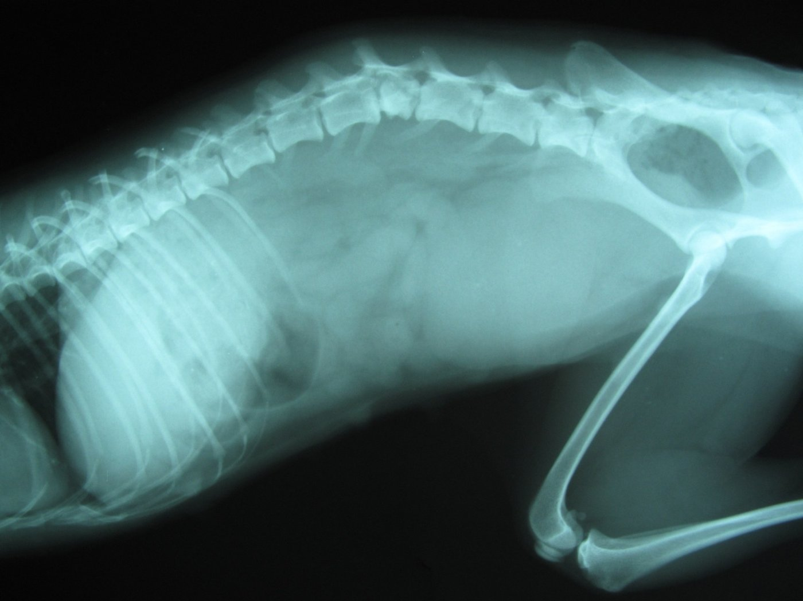
3-2 異常：(1) T8–T13 一側肋骨形狀不連續；(2) L1/2 脊椎排列錯位（看椎體與神經管）；(3) L3/4（L5）脊椎排列錯位；(4) L4 椎體變短、變形，L4 上方椎管變窄，L4 椎體顱腹側部分 radiopacity 增加。
3-3 診斷：(5) T8–T13 肋骨骨折（單側）；(6) L1/L2 半脫位；(7) L3/4 半脫位；(8) L4 椎體骨折。
學習重點：這份答案示範了「描述」與「診斷」分開寫——描述只寫看到的變化（不連續、錯位、變短、密度增加），診斷才寫病名。L4 椎體顱腹側密度增加是骨折後骨片重疊或壓縮的表現（推測）。和脊椎影像判讀：創傷的 L1 骨折合併 T13/L1 半脫位是同一類。
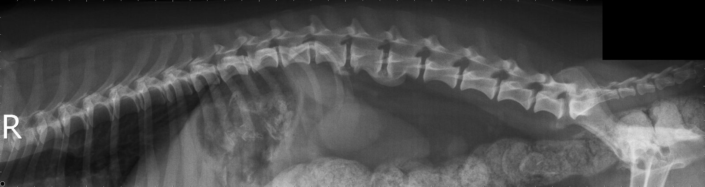
• T11/T12、T13/L1、L2/L3 椎間盤空間內有鈣化的椎間盤物質（calcified disc material）
• T12/T13（T10/T11）椎間盤空間變窄
• L1/L2、L2/L3 脊椎黏連性關節病（spondylosis deformans；答案原本寫 discospondylosis，被劃掉改正）
• L1/L2 椎間孔內有鈣化椎間盤物質
學習重點：同一張片同時考「椎間盤空間密度增加（鈣化）」「寬度變窄」「椎間孔密度增加」三個維度（〈脊椎影像判讀〉p.49–〈脊椎影像判讀〉p.57）；鈣化椎間盤本身不等於突出，出現在椎間孔內才表示物質已經跑出去（〈脊椎影像判讀〉p.91）。discospondylitis（感染）和 spondylosis（退化增生）只差幾個字母，答案就曾寫錯。
王麗倩：臨床檢查、消化道影像與行為病史
學長姐說「基本上考古」。照片考卷 4 題年年相同，2022 只把第 4 題換成行為的醫學原因。範圍：物理檢查、檢體採集、消化道臨床檢查與影像，以及行為病史（目前資料夾沒有這份講義）。
原卷照片（點開）
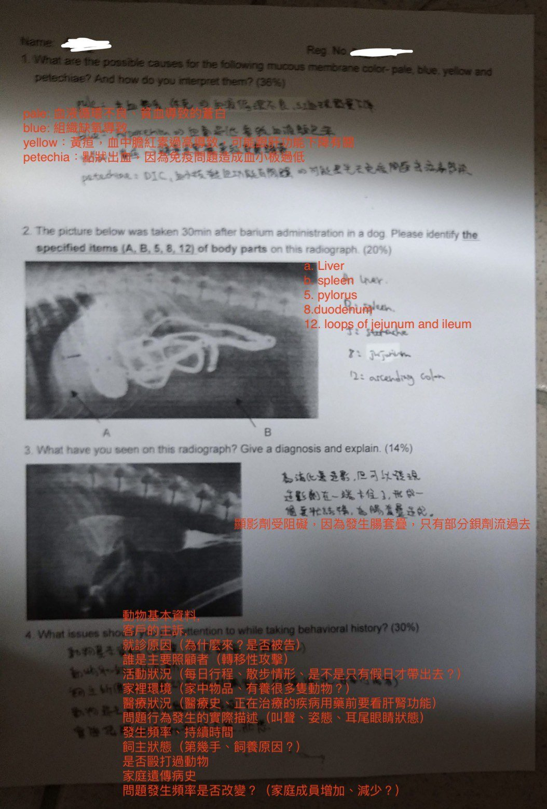
| 顏色 | 代表（Interpretation） | 可能原因 |
|---|---|---|
| Pale／white | 貧血、灌流不良、血管收縮 | 失血、休克、周邊血流下降 |
| Blue（cyanotic） | 氧合不足 | 低血氧 |
| Yellow（icteric） | 膽紅素堆積 | 肝臟或膽道疾病，及／或溶血 |
| Petechiae | 凝血異常 | 血小板異常、DIC、凝血因子缺乏 |
出自物理檢查講義的黏膜顏色表（〈物理檢查〉p.26；整理見物理檢查頁第 7 節）。學長姐紅字答案把 petechiae 只寫成「免疫問題造成血小板過低」，範圍太窄；講義的三個原因（血小板、DIC、凝血因子）都要寫。

5、8、12 照講義 p.46 的圖例（〈消化道臨床檢查與影像〉p.46）。學長姐紅字把 5 寫成 pylorus、8 寫成 duodenum，答題要寫完整講義名稱。A、B 講義圖上沒有標，學長姐答肝、脾：A 指向胃前腹側的大片軟組織（肝臟），B 指向胃後腹側（側位片上脾臟位於腹側、胃的尾側，推測）。原作答者寫的 5 stomach、8 jejunum、12 ascending colon 都是錯的。

學長姐答案：「顯影劑受阻礙，因為發生腸套疊，只有部分鋇劑流過去」。寫法建議：描述 → 「鋇劑灌腸後，結腸內鋇劑柱在 ×× 處中斷，末端呈杯口狀／彈簧圈狀（coiled spring）充盈缺損」；診斷 → 「腸套疊，套入的腸段（intussusceptum）阻擋鋇劑」；解釋 → 套疊腸段在腸腔內形成軟組織團塊，鋇劑只能包在周圍（〈消化道臨床檢查與影像〉p.62–〈消化道臨床檢查與影像〉p.64）。超音波的靶樣徵象見超音波診斷入門。
學長姐整理（行為講義不在本資料夾，無法核對）：(1) 基本資料 signalment；(2) 飼主主訴；(3) 就診原因（為什麼來？是否被告）；(4) 主要照顧者（轉移性攻擊）；(5) 活動狀況（每日行程、散步）；(6) 家裡環境（物品、多隻動物）；(7) 醫療狀況（病史、用藥，用藥前看肝腎功能）；(8) 問題行為的實際描述（叫聲、姿態、耳尾眼睛）；(9) 發生頻率與持續時間、模式是否改變；(10) 飼主狀態（第幾手、飼養原因）；(11) 是否毆打過動物；(12) 家族遺傳病史；(13) 過去的行為治療與結果；(14) 發病年齡；(15) 安置或安樂死的考量；(16) 飼主與動物的互動；(17) 還有什麼沒說的。
融合檔 p.3 另有一份英文 17 點清單（Signalment、Client's complaint、Reason for seeking help、Primary caretaker、Activity pattern、Medical considerations、Actual descriptions of problem behavior、Listing of incidents、Pattern、Client/owner、Previous treatment and outcomes、Age at onset and duration、Familial history、Changes in pattern、Placement/euthanasia、Client behavior and interaction、What has been left unsaid）。
萬萬檔 p.37、p.41 再補：不能用引導式問題、要用開放式問題；要知道行為什麼時候開始異常、是行為本身有問題還是無法配合飼主的生活方式；了解寵物與哪些人互動；飼主說錯也不能用批判的口氣；要保密資料；是否有用藥；家中有沒有發生重大改變（搬家）；之前發生問題時飼主怎麼處置；事先問卷，2–4 週要重做一次問卷。
學長姐整理（融合檔 p.4，依病因分類，行為講義不在本資料夾）：
(1) 先天／遺傳：嗜睡症、癲癇；腦積水、搖擺症候群（wobbler syndrome）；小腦發育不全；致死性肢皮炎（Bull terrier）。
(2) 傳染病：李斯特菌（Listeria）；狂犬病、犬瘟熱；隱球菌；心絲蟲、馬蠅幼蟲、弓蟲。
(3) 代謝：肝腦病（先天、後天門脈分流）；低血糖（胰島細胞瘤、營養不良）；儲積症（Fucosidosis、α-甘露糖症）；銅中毒（貝林登梗）；多系統神經元退化（可卡犬）。
(4) 中毒：藥物（Ibuprofen、Levamisole）、殺蟲劑（DEET）、鉛、汞。
(5) 營養：維生素 B1 缺乏、食物不良反應。
(6) 腫瘤：腦瘤、腦膜瘤、轉移性腫瘤。
(7) 免疫與發炎：類固醇反應性腦膜炎、肉芽腫性腦膜腦炎。
(8) 內分泌：甲狀腺功能低下／亢進、腎上腺皮質功能亢進。
(9) 退化：老化、認知功能障礙。(10) 外傷：頭部外傷。(11) 血管：出血、梗塞。(12) 神經：顳葉癲癇（精神運動性癲癇）、受體或神經傳導物質異常。(13) 特發性：憤怒症候群（rage syndrome）。
萬萬檔 p.37–38、p.42 補上「疾病 → 行為」的對應例子（答題加分）：腦瘤 → 精神狀態改變（mentation alterations）；食物過敏 → 貓自我舔咬脫毛（self-induced alopecia）；牙科疾病 → 厭食；膀胱炎 → 亂尿（house soiling）；關節炎 → 攻擊；cortisol → 抑制學習、使甲狀腺素下降；甲狀腺功能低下 → 攻擊性、極度害羞；糖尿病 → 護食。
答題可用 DAMNIT-V 的病因分類當骨架（見脊椎影像判讀第 4 節的補充）。
- 「麗倩行為學的 10～23 頁可能會考」（行為學講義不在本資料夾，拿到講義後要補讀）。
- 「要能分辨 X 光下每個臟器的區別」→ 第 2 題的鋇劑造影認結構；學長姐另附 Coulson & Lewis 側位與 VD 腹部標號圖（教科書，不轉貼），重點：胃底有氣體、肝尾端正常在肋骨後方、左腎長度約第 2 腰椎的 2.5–3 倍、右腎較前且靠中線、盲腸在 VD 偏右、大型犬降結腸有一個折彎。
- 「給一張 X 光，給出診斷和解釋」→ 第 3 題每年換圖，學長姐整理過的四種：脾臟腫大（VD 左側偏後一大塊軟組織）、肝臟腫大（肝尾端超出肋弓很多）、胃內異物、腸套疊（鋇劑灌腸過不去、coiled spring）。四種影像都在消化道頁第 8 節。
- 王麗倩「技術理學檢查」範圍另有：齒式（犬永久齒 3142／3143、貓 3131／3121；乳齒犬 313／313、貓 313／312）與口腔檢查（牙齦、黏性、CRT、舌繫帶 frenulum、扁桃腺；口鼻瘻管 oro-nasal fistula），見COHAT 頁。
學長姐整理的其他王麗倩題目（融合檔 p.1–2）必考
| 題目 | 答題重點（學長姐版＋講義） | 講義 |
|---|---|---|
| Body form（可拿來寫 Ordinal scale） | very thin、underweight、ideal、overweight、obese 五級，看肋骨、髖骨、俯視腰身、側看腹線、頸部與尾根「游泳圈」 | 物理檢查第 3 節 |
| Color of mucous membrane（可拿來寫 Nominal scale） | 七種顏色、代表、可能原因三欄 | 〈物理檢查〉p.26 |
| 正常犬貓呼吸、心跳、體溫 | 犬 10–30、60–120、38.0–39.0 ℃；貓 20–40、120–180、38.5–39.0 ℃ | 〈物理檢查〉p.17–〈物理檢查〉p.19 |
| CRT > 2 sec 的臨床意義 | 循環受損：寒冷、休克、心血管疾病、貧血 | 〈物理檢查〉p.25 |
| Try to explain the image construction in 2D ultrasonography | 探頭發出聲波並接收回音，回音的振幅轉換成亮點的亮度（B-mode），依回音時間定位深度，數百條掃描線組成影像（這題屬超音波，可能是王尚麟的題） | 〈超音波診斷入門〉p.1 |
| The reasons of DIC | 細菌感染（內毒素）、病毒感染、抗原抗體複合物、血管內溶血、大面積燒傷、瀰漫性血管內皮受損、休克 | 講義只出現「點狀出血→DIC」 |
| 腹腔穿刺位置 | 腹正中線、臍後 2–3 cm | 〈檢體採集〉p.40 |
| 胸腔穿刺位置 | 第 6–7（–8）肋間、肋軟骨交接處正上方、肋骨前緣進針 | 〈檢體採集〉p.43–〈檢體採集〉p.44 |
| 小腸與大腸性下痢 | 小腸性：糞便量大、體重下降、腹鳴脹氣；大腸性：次數多、裡急後重、量少、含黏液與血 | 消化道頁 |
| 糞便檢查 | 消化試驗、塗抹法、浮游法；後兩者查寄生蟲（梨形鞭毛蟲在小腸、纖毛蟲在大腸） | 講義未教 |
萬灼華：實驗動物影像
10 題每年相同（2022 學長姐：「萬的跟考古一模一樣」）。題目、學長姐作答與逐選項詳解放在講義頁，避免兩邊各寫一份。
| 題 | 考什麼 | 學長姐作答 |
|---|---|---|
| 1 | 看圖：四隻小鼠的影像是哪種 imaging | (D) Bioluminescence |
| 2–6 | 電磁波譜圖上 CT、MRI、PET、螢光、SPECT 的位置 | C、A、D、B、D |
| 7（複選） | 整隻活小鼠 MRI 的磁場強度 | (C) 4.7 T、(D) 9.4 T |
| 8（複選） | 小鼠影像中心的人員 | ABCD |
| 9（是非） | 影像中心工作和醫院影像中心相似，其他像辦公室文書 | ✕ |
| 10（是非） | MRI 要放在射頻屏蔽室 | ○ |
萬萬檔 p.1 是同一份考卷的另一份作答，十題答案與上表完全相同（另註：PET＝正子電腦斷層、螢光屬光學影像 fluorescence／bioluminescence；第 8 題四個選項旁註「技師、照顧、vet」）。
其他老師與舊年度題目（向才園、黃慧璧、跛行檢查、期末）
來自〈Mid 108 影診萬萬〉。這些老師或範圍不一定在今年（2026）的期中考，先當參考；今年的授課表以老師公告為準（本學期講義由王尚麟教超音波）。
黃慧璧：臨床診斷（量表與檢驗特性）理解
學長姐答案（萬萬檔 p.18、p.31、p.39 三版合併）：
• Interval scale（等距尺度）：以相同標準做定量比對、數字之間的差距有意義，可加減：體溫、心跳數（犬 <60 徐緩、60–120 正常、>120 過速；貓 <120、120–180、>180）、病灶大小、VHS（vertebral heart scale＝L＋S）、血壓、血檢數值、以第 2 腰椎長度評估腎臟大小（正常約兩個 L2）。
• Ordinal scale（順序尺度）：半定量的分級：BCS、肌肉狀態評分、心雜音 Grade I–VI、脫水分級、膝蓋骨異位第一到第四級、乳牛跛行評分 1–5（normal → severely lame）、觸診硬度（水袋 → 泥狀 → 軟橡膠 → 硬橡膠 → 石頭）。
• Nominal scale（類別尺度）：用已知事物去類比、沒有大小：黏膜顏色、扣診音（金屬音、空洞音、濁音、鈍音）。
出題者：萬萬檔 p.39 標「黃慧璧 臨床診斷」，HPH 為其縮寫（推測）；學長姐稱「第一堂課的考試」。
| 名詞 | 學長姐筆記（萬萬檔 p.39） |
|---|---|
| Precision 精確 | 重複測量之間差多少（亂或整齊） |
| Accuracy 準確 | 多靠近真實數據；不準可以校正 |
| Sensitivity 敏感度 | 例：有咳嗽可能有心臟病（有病的找得出來） |
| Specificity 特異度 | 例：心臟病會咳嗽，沒病沒症狀（沒病的不會誤判） |
向才園：超音波（舊年度）理解
學長姐答案（萬萬檔 p.19、p.39）：優點——安全、非侵入、無輻射；比其他全身檢查便宜（耗材少）、儀器方便易操作、可在床邊做；即時成像、解析度高；有治療潛力（如震碎結石）。缺點——判讀較主觀、需要技術熟練度；聲波對骨頭穿透性差、肺部附近較難取得影像；容易受氣體干擾；肥胖病患或較深的器官不易。對照超音波診斷入門。
學長姐答案（萬萬檔 p.8–9）：準備——短毛動物用酒精把毛弄平、塗 gel；長毛動物在胸骨旁（肘後）剃毛。需要鎮靜時：Acepromazine 0.025 mg/lb（最多 1 mg）IV＋Buprenorphine（Buprenex）0.01–0.02 mg/kg（學長姐整理，Buprenex 的途徑未寫、非本學期講義內容）。過程——右側臥，觸摸心尖搏動放探頭，探頭垂直心臟縱軸，眼睛看螢幕調整到短軸。短軸由心尖往心基部依序：LV（乳突肌，前後乳突肌大小相同）→ Apex → Chordae tendineae（腱索）→ Mitral valve → Aortic valve（RV 內三尖瓣與肺動脈瓣、下方 LA）→ Pulmonary artery。再逆時針轉 90° 換長軸：4 chamber（左上 RV、右上 RA、左下 LV、右下 LA）→ 往肩膀方向調整成 LVOT。切面圖見超音波診斷入門。
學長姐答案（萬萬檔 p.10–11、p.39，含「老師版」）：檢查前先問診、理學檢查、確認病史；禁食但可給水；塗水溶性 gel。
(1) 肝、膽囊、胃：仰躺，從劍突開始、由右到左逐葉檢查（肝佔前腹腔約 2/3），膽囊在右側，肝左側找到胃；先 sagittal 再 transverse，看邊緣、質地、門脈。
(2) 脾、左腎、腎上腺：左側找到胃再找脾；左腹壁找左腎，量長短軸、看腎動脈（可加測 RI、PI）；瘦狗或深胸狗用側躺較好找，胖狗胖貓用仰躺；腎上腺在腎的前內側。
(3) 膀胱：脹尿時最清楚，長短軸；背側可找到後腔靜脈與主動脈，往尾側找尿道與公畜前列腺。
(4) 右腎、十二指腸、胰臟：右肋緣處由肝找右腎；transverse 下右腎外側是十二指腸、右腎頭端十二指腸內側是胰臟。
(5) 消化道：依序胃 → 幽門 → 十二指腸 → 小腸 → 大腸，看腸壁厚度、運動性、內容物、腸繫膜淋巴結，以蛇行方式掃 2–3 次。
(6) 生殖：母畜由膀胱順子宮體往子宮角、腎的方向找卵巢；公畜多可直接觸診。
跛行檢查（老師不明，萬萬檔 p.44）看過
- 問診：功能、受傷部位、什麼時候開始、經過、程度、頻率、有無改變位置。
- 觀察站姿、步伐：急性 → 患肢抬起（骨折、脫臼、韌帶斷裂）；慢性 → 單側肌肉萎縮；varus＝內翻、valgus＝外翻；torsion（骨頭沿長軸轉）、rotation（從關節出發的肢端沿長軸轉）；abduction 外展、adduction 內收。
- 步行檢查：stride（著地瞬間）、stance phase（負重期）、swing phase（擺動期）；直線步行看患肢負重期縮短、點頭運動（前肢異常）、腰擺動與兔子跳（後肢異常）；圓周步行時患肢在圓心側較痛。跛行分級 grade 1–4。
期末考（參考）：眼科看過
萬萬檔 p.2 的期末考題照片。這是期末範圍，期中不一定考；眼科講義不在本資料夾。補充：角膜潰瘍處上皮缺損，螢光素會染上基質呈綠色；TBT 是染色後到淚膜出現破洞的秒數；鼻淚管通暢時染劑會在數分鐘內從同側鼻孔流出（Jones test）。
跨年重複題整合（張雅珮 X 光原理）
同一題每年換比較對象或換一個字，就從對變錯。年份越多越要背。
| 題型 | 各年的變化 | 答案 | 出現 |
|---|---|---|---|
| 光電效應圈選（比較兩種組織） | 膀胱 vs 脂肪（107-1）／脂肪 vs 脾（108-1）／膀胱 vs 脊椎（109-1）／心臟 vs 肺，再問脊椎（2022）／骨 vs 液體（100-1 改成敘述題） | 密度高的那個：higher 光電效應、less 穿透、higher radiopacity、brighter | 100-1、107-1、108-1、109-1、2022 |
| 高 kVp 圈選 | 幾乎逐字相同；108-1、109-1 多問「increase / decrease contrast」 | lower、more、lower、decrease | 107-1、108-1、109-1、2022 |
| 哪個因素不影響對比 | 選項有時有 filter、有時沒有；2022 改成逐項 Yes／No | 107-1、108-1：答案是 filter（紅筆、藍筆訂正，原作答「全部都影響」是錯的）；109-1：選項沒有 filter，答「全部都影響」；2022 Yes/No：距離 No，其他 Yes（準直器有爭議）。整理：只有 filter 不影響對比 | 107-1、108-1、109-1、2022 |
| mA vs kVp | 「increasing mA accelerates electrons」每年都是錯的敘述；2022 再加「mA applied to the anode」也錯 | mA＝陰極、電子數量；kVp＝加速、能量 | 100-1、107-1、108-1、109-1、2022 |
| 胸腔片肺野放哪裡 | 「close to x-ray tube」＝對（107-1、108-1）；「close to the X-ray film」＝錯（109-1、2022） | 要看的肺放遠離底片 | 107-1、108-1、109-1、2022 |
| 感興趣區放哪裡（一般） | 「close to the x-ray tube to avoid distortion」＝錯 | 一般放靠近底片；肺是例外 | 100-1 |
| 液體與肌肉同厚度 radiopacity 相近 | 每次都是對的敘述 | 對（同屬軟組織） | 107-1、108-1、109-1 |
| 快速曝光減少不自主動作 | 每次都是對的敘述 | 對 | 107-1、108-1、109-1、2022 |
| 脊椎標準投照 | lateral＋VD＝對（109-1）；lateral＋DV＝錯（2022） | lateral＋VD | 109-1、2022 |
| 頸椎側位齒突看不清楚（C1 翼重疊） | 兩年都出現 | 對（學長姐答案） | 109-1、2022 |
| 光子穿透數取決於 | 能量、厚度、原子序 | All of the above | 107-1、108-1 |
| 看圖：評估側位片擺位 | 每年第 6-1 題 | 左／右側位判斷＋理由 | 107-1、108-1、109-1 |
資料可信度與待確認
| 題目 | 考古上的答案 | 講義依據與本頁處理 |
|---|---|---|
| 2022 王尚麟第 1 題（最高聲阻抗） | 學長姐 (B) 膀胱 | 依原理應為 (C) 骨頭；頁面寫 (C)，標 ⚠ |
| 2022 王尚麟第 2 題（不適合超音波） | 學長姐 (A) 腎臟 | 依講義應為 (B) 肺（〈超音波診斷入門〉p.4）；頁面寫 (B)；兩份影本都寫 A |
| 2022 張雅珮第 3a 題（準直器是否影響對比） | 原作答 No、學長姐 ✗ | 講義列 fog and scatter 為對比因素、準直減少霧化（〈X光學基礎〉p.9），傾向 Yes；兩說並列，請以老師上課為準 |
| 2022 張雅珮第 4h 題（脂肪 CT 值約 100） | 原作答 True | 講義脂肪 −100 HU；頁面寫 False |
| 109-1 第 4 題（哪個敘述錯） | 無作答 | 已解決：萬萬檔的 107-1 紅筆、108-1 藍筆都把「不影響對比」訂正為 filter，與 109-1 (b) 為正確敘述一致；頁面 109-1 答 (c)、107-1 答 (a)、108-1 答 (f)。講義沒有寫 filter，仍以老師上課為準 |
| 108-1 第 7-3 題（脊髓造影顯影劑位置） | 作答圈 (c) intramedullary | 脊髓造影在蜘蛛膜下腔，頁面寫 (b) |
| 100-1 第 4 題（五種基本 radiopacity） | 作答少了脂肪 | 頁面寫氣、脂肪、軟組織／液體、骨、金屬 |
| 2022 第 5–8 題影像 | 學長姐只留「類似圖」 | 考場原圖不在資料夾；第 8 題影像缺 |
| 融合檔 Question 3、4 | 英文答案來源不明 | 沒有年份與題目原文，照錄 |
| 老師歸屬 | — | 100-1 期末、融合檔 Q3／Q4 的老師是依內容推測；2018（HPH）量表題依萬萬檔改為黃慧璧；萬萬檔 p.44 跛行檢查的老師不明（標「ili」） |